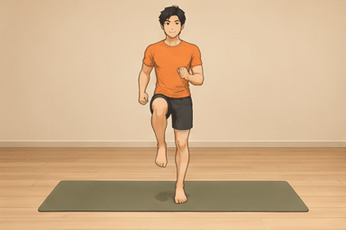

PROGRAM 30 HARI · BINA OTOT
Bina otot.
Kuat hingga ke teras.
Latihan seluruh badan, teras dan kardio. Bermula dengan teknik, berkembang dengan konsisten.
hari selesai
Pelan sebulan
4 minggu + 2 hariProgram permulaan 30 hari. Minggu 1–2: 2 set; minggu 3–4 kekal 2 set kecuali anda aktifkan pilihan 3 set dalam tetapan apabila sudah pulih. Pilih mod ringan jika belum bersedia. Kemajuan program asas terdahulu kekal dalam pelayar secara berasingan.
Cara pilih berat & tambah cabaran
Pilih beban yang membolehkan 8–12 ulangan terkawal, dengan rasa masih mampu 2–3 ulangan lagi. Berat tidak ditentukan daripada gambar atau berat badan.
Apabila semua set mencapai hujung julat dengan teknik baik pada dua sesi, tambah beban paling kecil yang tersedia. Jika lonjakan terlalu besar, kekalkan berat dan perbaiki kawalan. Jangan tambah berat dan set serentak jika belum pulih.
Rehat beban 2 minit; teras 1 minit. Tambah masa bila perlu. Untuk latihan ulangan, tekan Selesai set selepas siap — tiada kiraan masa yang memaksa anda tergesa-gesa.
Adakah pelan ini berkesan?
Asasnya disokong kajian; hasil individu tidak dijamin. ACSM 2026 merumuskan 137 ulasan sistematik. Latihan rintangan yang konsisten membantu kekuatan dan pertumbuhan otot, termasuk latihan di rumah. Pelan ini mengguna prinsip tersebut, tetapi gabungan 30 hari ini sendiri belum diuji dalam kajian.
Jumlah latihan: pada 2 set, dada mendapat 4 set langsung seminggu, belakang 6 set bagi setiap sisi, paha depan 6 dan belakang paha 4. Ini dos permulaan. Pada 3 set, jumlahnya 6, 9, 9 dan 6. Bahu dan tangan turut bekerja dalam gerakan menolak dan menarik. Ia belum program volum tinggi untuk memaksimumkan pembesaran otot.
Progres: bandingkan ulangan pada berat yang sama. Naikkan beban terkecil selepas mencapai hujung julat dengan teknik baik untuk dua sesi. Jika penat akibat syif atau belum pulih, ulang dos terdahulu atau ambil hari pemulihan; jangan himpunkan sesi tertinggal.
Perut: satu kajian rawak 6 minggu mendapati latihan perut meningkatkan daya tahan tetapi tidak mengurangkan lemak perut secara signifikan. Oleh itu, jangan anggap plank atau dead bug sebagai pembakar lemak setempat.
ACSM 2026 ↗ · Kajian latihan perut ↗
Teknik: GIF AI bukan bukti gerakan tepat. Rujuk demonstrasi manusia untuk prinsip asas: chest press, row dan squat. Variasi sokongan dan pegangan mungkin berbeza daripada pelan.
Perut & pemakanan
Latihan teras menguatkan otot perut. Latihan perut sahaja bukan cara yang boleh diharap untuk membuang lemak setempat; perubahan pinggang memerlukan pengurangan lemak badan secara keseluruhan.
Sertakan sumber protein seperti ikan, ayam, telur, tauhu atau tempe pada setiap hidangan. Banyakkan sayur, kawal saiz hidangan dan kurangkan minuman manis. Elakkan diet terlalu ketat yang mengganggu tenaga latihan.
Catat berat dan ukur lilit pinggang seminggu sekali. 30 hari ialah fasa membina asas, bukan janji six-pack. Tidur dan pemulihan juga sebahagian rutin.
Bangku, teknik & keselamatan
Kosongkan bangku dan ruang sekeliling. Semak pin pengunci, kaki bangku, pengunci plat dumbbell dan had beban pengeluar (berat badan + beban). Keupayaan bangku tidak dapat disahkan melalui gambar.
Untuk bench press gunakan bangku rata; shoulder press memerlukan sandaran hampir tegak dan terkunci. Jika bangku tidak stabil atau tidak sesuai, jangan buat latihan atasnya.
Pelan umum pemula, bukan penilaian kecederaan. Hentikan latihan jika sakit tajam, pening atau sakit dada. Jika ada kecederaan atau penyakit yang menghadkan senaman, dapatkan nasihat profesional. Jangan tahan nafas atau angkat hingga gagal ketika bersendirian.
Demo bingkai AI ialah ilustrasi, bukan pengesahan teknik. Ikut arahan bertulis; julat pergerakan mestilah selesa.
Rujukan: ACSM: latihan rintangan · CDC: aktiviti & berat badan


Pemasa di bawah mengawal tempoh latihan. Butang di atas gambar mengawal animasi.
Urutan latihan & set
Sambung projek dalam chat baharu
Salin arahan ini ke chat baharu yang mempunyai akses GitHub:
Sambung projek GERAK30 dalam repo ReqooCo/Reqoo.co. Baca docs/GERAK30-HANDOFF.md dahulu, semak kod dan status deployment terkini, kemudian teruskan permintaan saya. Kekalkan data kemajuan dan app lain.
Buka nota sambungan projek ↗ · Semua app Reqoo
Chat baharu tidak memintas had penggunaan akaun. App latihan boleh digunakan tanpa chat. Rekod kemajuan kekal dalam pelayar dan domain ini; ia tidak berpindah secara automatik dari laman lama.